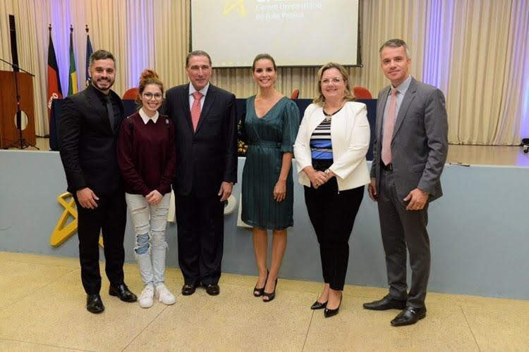
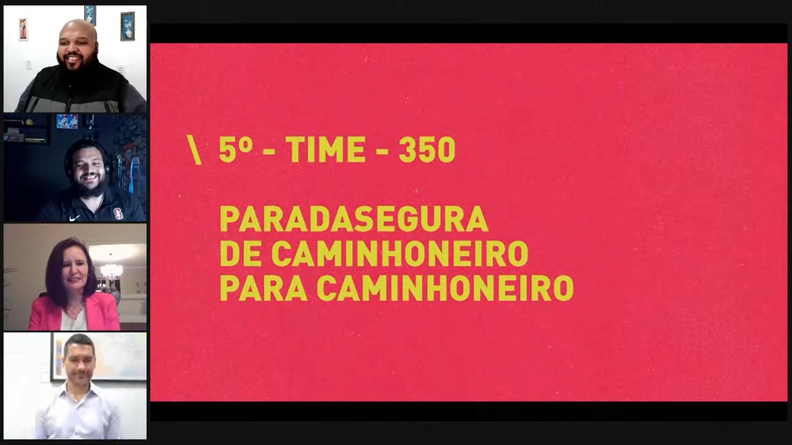
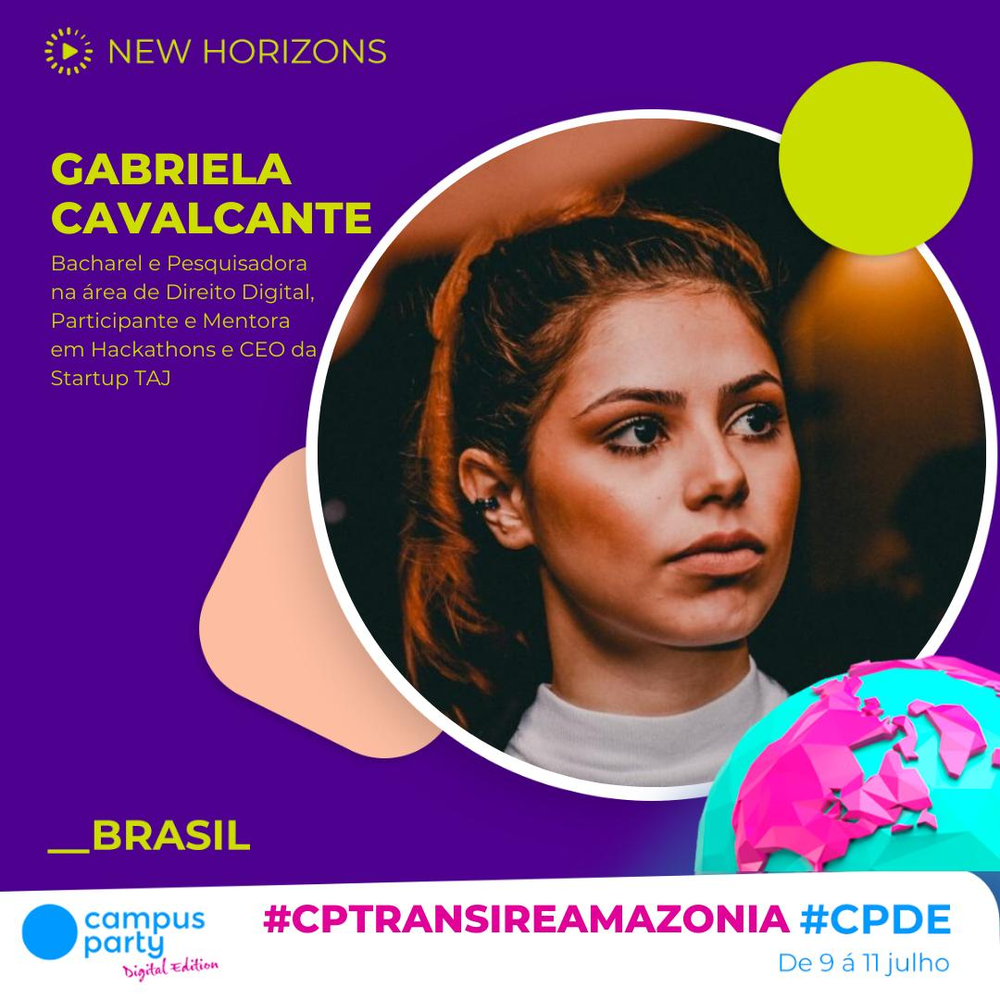
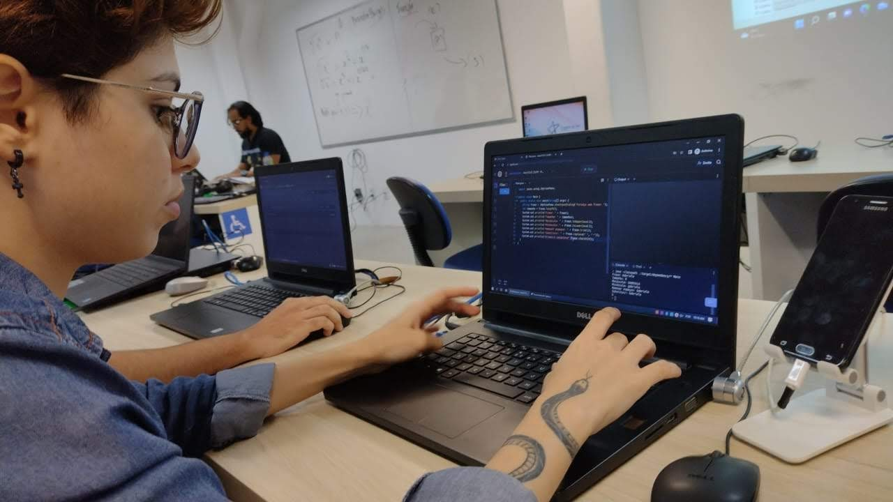

02 de março de 2020
Meu primeiro Hackathon

No início do meu último semestre do curso de Direito eu vi um anúncio
sobre um tal de "Hackathon LawTech" e fiquei me pergutando "o que
diabos é isso?!". Resolvi me inscrever porque já estava interessada
pelo "mundo tecnológico" e o associando à minha área. Inscrição
realizada: fui todos os dias, me encantei com o evento e, de tabela,
eu e minha equipe ganhamos o Hackthon! Fui apresentada, de forma
exclusiva, à Reitora da Instituição e ao Ministro Paulo Dias de Moura
Ribeiro (STJ) que havia sido convidado ao evento! Além disso, recebi
um convite para estagiar na Ordem dos Advogados do Brasil - Seccional
Paraíba, num núcleo voltado a mentoria de Startups.
2020 a 2021
Hackathons e crises

Após concluir o curso de Direito, fiquei um bom tempo desempregada,
estudando para concursos e à procura da minha primeira oportunidade de
trabalho - o que não surgiu por diversos motivos (o caos em que o
mundo se encontrava, empresas falindo, isolamento, desemprego em alta,
o péssimo governo etc.). Por sorte, tive o privilégio que poucas
pessoas tiveram de poder ficar em casa e investir nos estudos. Ainda
assim foi uma época difícil para mim pois tenho depressão e a pandemia
desencadeou em mim algumas crises. Investi o meu tempo na leitura de
artigos/notícias sobre Direito e Tecnologia, participei de/mentorei em
Hackathons, baixei aplicativos para destravar o meu inglês e também vi
muuuitos filmes/séries sem legenda, aliando a necessidade ao lazer,
haha! Dentre os Hackathons aos quais participei, destaco o Hackathon
CCR da Shawee, o qual conquistamos o 5º lugar nacional numa competição
que envolveu mais de 7 mil inscritos.
2020 e 2021
Palestras e mentorias

O destaque no Hackathon da Shawee me abriu as portas ao Campus Party,
um dos maiores eventos de Tecnologia do mundo. Me convidaram para
palestrar sobre LawTech e eu, obviamente, aceitei - mesmo com todas as
inseguranças que a Pandemia estava me causando, era preciso
enfrentá-las e agarrar essa oportunidade. A palestra não ocorreu da
forma que eu esperava (eu estava muito nervosa, rs), mas conseguiu
inspirar algumas pessoas, o que já foi de bom tamanho para mim. A
partir daí foram aparecendo mais convites de palestras e mentorias em
Hackathons.
2022
Migração para a área de Tecnologia

Em 2022, eu me inscrevi para um concurso no qual eu estava me sentindo
muito preparada. Já vinha estudando há um bom tempo - desde o início
do Curso de Direito - e, inclusive, até havia me matriculado no
Funcional para me preparar para o Teste de Aptidão Física. Porém não
foi por aí: o número de inscritos foi altíssimo e, mais uma vez, eu
havia sido aprovada com uma nota insuficiente para ser classificada.
Eu não aguentava mais isso! A minha vida era apenas estudar e ainda
assim eu não conseguia uma boa oportunidade na minha área. Foi aí que
eu tomei a decisão de migrar. Eu já sabia que queria fazer algum curso
da área de TI mas tinha muito receio de ingressar e fracassar por não
dominar a área de exatas. Porém em agosto de 2022, engoli o medo e
decidi entrar para o curso de Análise e Desenvolvimento de Sistemas.